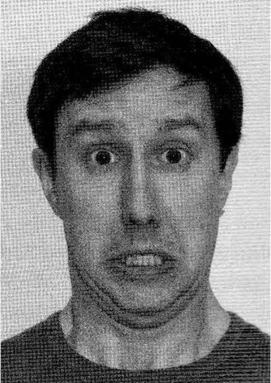
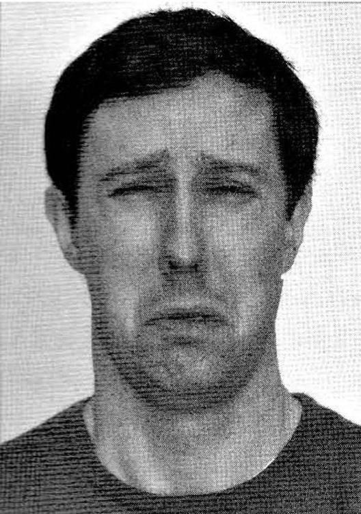
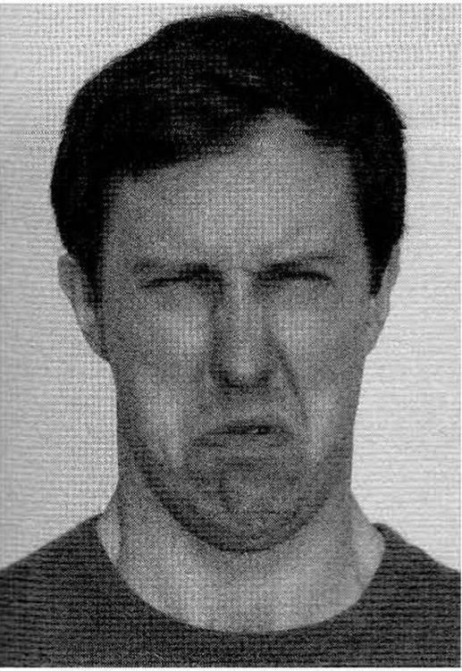
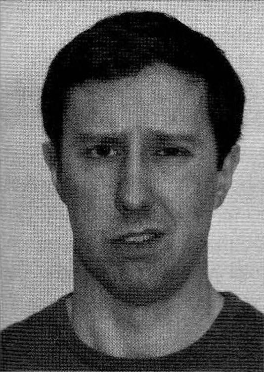
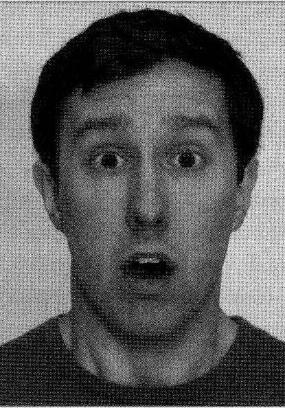
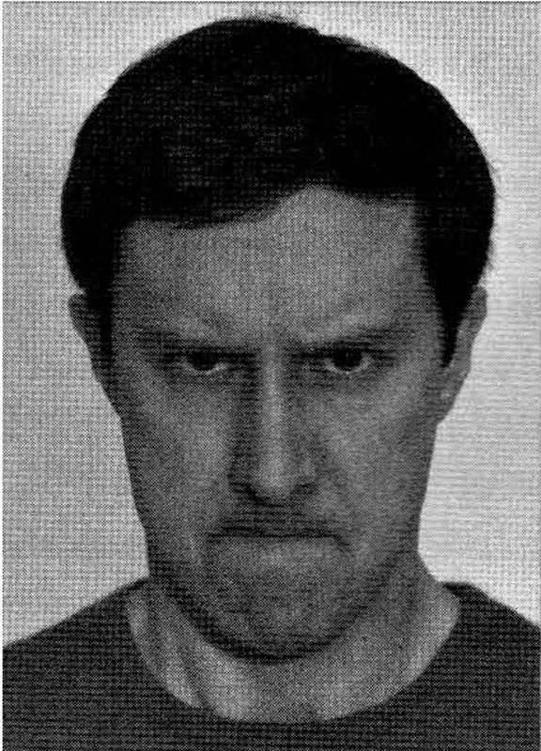

第三章 观察面部表情
嘴可以用来说谎，但是面部表情却泄了密。
——弗里德里希·尼采
揭穿骗术的第一法则就是观察面部表情。
众所周知，我们的面部表情与我们的思想和情感紧密联系，甚至隐藏起来或者下意识的思想和情感都会在面部表现出来。但是这一观念真正得到大家接受却还是在40年前。试想一下，如果人们早就明白这一道理，历史就要被改写。如果1938年张伯伦与希特勒谈判的时候，他没有被这位独裁者表面上所承诺的不会入侵捷克斯洛伐克而蒙蔽；如果那些投资者或者美国证券交易委员会的委员们也读出了麦道夫的面部表情，事情就会是另一番景象了。直到最近，我们才开始意识到系统学习人类的面部表情的重要性。
首次突破
查尔斯·达尔文认为人类的面部表情是与生俱来的，并且不同文化具有统一性。1872年，达尔文在他的著作《人和动物的表情》中探究了诸如“大笑向微笑的演变”、“羞愧感来自于对道德法则和成规的破坏”等话题。同时他还研究了人类各种表情的心理成因（用图片来解释说明在当时还是很新颖的），使得人们相信每个人的表情都是一样的。
有一件事我一直都很好奇：我们不用刻意去分析表情，却能够辨别出各种表情的细微差别。我相信没有人能描述愠怒或狡猾的表情是什么样子的；然而大多数的观察者都能够辨别出人们脸上的这种表情。不论何人，当我把年轻人眉毛耷拉下来的照片给他看时，他都认为照片中的人是悲伤的或者类似这种感情；我相信，没有一个人能够说出那个年轻人的眉毛向下倾斜了多少度，是否在眉头皱成了直角……我一直努力向大家证实：人类的一些基本表情，在全世界都是一样的。
达尔文一直都将其家人作为研究对象，第一个被他近距离观察的人就是他的第一个孩子——威廉（William）。
想要证明孩子天生就能辨别面部表情真是太难了。于是我将我的第一个孩子作为研究对象。他刚刚出生，还没有机会向身边的孩子学习任何表情。但我坚信那个时候他已经懂得微笑，看到微笑时感觉快乐，刚出生的他通过经验来学习东西还为时尚早。当他4个月大时，我在他面前发出奇怪的声音，做几个鬼脸，试图表现得很粗鲁一些。但是如果声音不是很刺耳，鬼脸不是很恐怖，他都当做是笑话了，并且都会对我笑一笑。当他5个月大时，似乎明白了充满同情的表情和语调。当6个多月大时，他的保姆在他面前假装哭泣，我看见他的脸立马呈现出忧郁的表情，嘴角很明显地下弯。他很少能见到其他孩子或者大人哭泣，同时我怀疑当时他已经学会推理。因此我认为，一定是他内在的感觉告诉他，保姆的哭泣表达了悲伤，他也因此瞬时产生了充满同情、忧郁的表情。
对于那些19世纪受过教育的人来说，达尔文已经不是第一次提出一些不受欢迎的想法了。我们接受“人类从猿到人的进化”已经够难的了，如今他又提出：人与动物是紧密相连的。如果真的如达尔文所说，我们人类的表情是与生俱来而不是后天习得的话，那么这一人类细微情感和丰富智慧的铁证——面部表情，就不再是人类所特有的了。
即使《人和动物的表情》一书刚一出版就卖光了，然而人们接受书中思想却是很慢。直到20世纪中期，科学界还普遍认为人类的一系列表情是在个体文化中形成，并通过社会化和模仿一代代传承下来。当时一些人类学家，玛格丽特·米德（Margaret Mead）、葛瑞利·贝特森（Gregory Bateson）和雷·博威斯特（Ray Birdwhistell）都认为达尔文受到了拟人论的影响，癖好谈轶事趣闻并有着西方人的偏见。博威斯特一生都从事人类非语言交际的研究。他在1970年的一次访谈中坚定地说道：“正如我们所知，世界上没有通用的手势，便也不会存在能够为各个社会所接受的面部表情、态度或者身体姿势”。米德和贝特森担心，过分地强调人在生物学层面的动物性而忽视文化因素，会加强人们在民族和种族之间的比较。在1972年的自传中，米德提到了她的担心：人类倾向于将其特定的特征与性别、年龄、种族、身材、肤色甚至是籍贯联系在一起，并因此作出不公正的比较。
20世纪60年代，波士顿大学的心理学家威廉·康顿（William Condon）提出了一种他称之为“微观分析”的研究方法。他先用摄影机记录下两个人之间的简短交流，然后再一帧一帧地分析影像画面。（他花了一年半的时间，才研究完这仅仅4秒半的短片，并磨损了130份电影拷贝。）康顿记录下了每一帧里说话人的微小动作和分裂的音节。影片中的一帧是1/4秒，而音节“k”在“ask”这个词里面仅有1/5秒。康顿发现，短片中说话人的动作与话语是同步的，同时还发现倾听者的动作与说话人的话语也是一致的。他解释道，人与人之间的交流就像是在跳舞，每个人都在复杂而微妙的矩阵中相互配合共同享受着。
识别谎言小贴士
经常寻找一下在脸上显现出来的人的瞬间情感变化（叫做“面部微表情”）。虽然表情变化瞬间完成，但却不容易消除，由此便可以推测当事人的真实感受。
胶片分析法是E·A·哈格德（E·A·Haggard）和肯尼思·S·艾萨克斯（Kenneth S.Isaacs）对病人进行精神分析至关重要的工具。他们将影片一帧一帧的分析，以观察病人的精神状况，并将此命名为“微动作”。他们的研究报告“精神疗法中，面部表情微瞬间作为自我意识机理的指示剂”发表于1996年，这使得他们成为最早研究微表情这一现象的社会科学家。
保罗·埃克曼和费尔族
虽然哈格德和艾萨克斯最早研究微表情，但是保罗·埃克曼的研究才真正吸引了人们的注意。埃克曼1965年开始研究面部表情之前，并没有阅读过达尔文的《人和动物的表情》。直到他遇到西尔万·汤姆金斯（见第二章）并阅读了其关于面部表情的文章后才开始重视这一议题。埃克曼游历了智利、阿根廷、日本和巴西，每到一个国家他都拿出印有各种面部表情的照片给当地人看。最后他发现每个被访者对表情的认知都是一样的。
然而有人质疑，那些都是发达国家，媒体会帮助人们规范表情反应。于是，埃克曼决定亲自去巴布亚新几内亚，研究一个名叫“费尔”的与世隔绝的部落，那里的人们从来没见过电影、书籍、杂志甚至大量的游客。他推测，费尔人肯定不会明白文化是如何通过物质形式表现出来的。
当埃克曼将印有各种表情的照片拿给费尔人看时，他们与那些西方人对于表情的解读是一样的。随后研究员又问费尔人如果听到好消息或者发现一具腐烂的动物尸体时，会做什么反应时，费尔人所作出的表达喜悦、恶心或者其他一些情感的表情，与世界上其他民族的人的表情是一样的。这就证明，人类的面部表情是与生俱来的，而非由文化决定的。
埃克曼和其他研究者同时也指出：文化因素还是能够影响我们的表情的。人的感觉是内在的，面部表情是天生的，但是如果一个人努力地克制自己的表情则是受到了背景和教养的影响。如果一个人生长的文化中信奉掩饰强烈的情感，那么他就会拼命工作以防情感外露。但如果一个人生活环境里的其他人都充满活力，那么他也会经常微笑、做鬼脸或者痛哭流涕。
然而没有人能够完全控制自己表情。在一次实验中，埃克曼分别向美国学生和日本学生展示关于手术和意外事故的影像，学生们要么独自观看、要么分组观看。他发现，美国学生不管是独自还是分组观看时的表情是一样的，都表现出震惊和恐惧。日本学生则发生了变化。他们分组观看会比独自观看表现得要冷漠一些。由于日本学生在学校接受的教育就是要避免强烈的情感，所以日本学生比美国学生更在意不要流露自己的情感。
早些时候，埃克曼曾经将43种不同的面部肌肉与活动分离开来。他通过计算得出，面部肌肉通过不同方式的组合可以形成上万种面部表情，其中有3000种能够直接表现出人类的情感。根据人类的情感，又可以将这3000种表情划分为七大类，每一类表情在不同文化当中的表现形式都是一样的。
深层探究
想要更加细致生动的了解面部肌肉是怎样运动的，请查阅http://www.artnatomia.net/uk/artnatomyProgram.xhtml。
人类七大基本情感的面部表征
识破欺骗这一表情之前，我们需要回顾一下表达真实情感的表情是什么样子的。你可能会认为：“我知道愉快的表情，是一个微笑。悲伤的表情就是嘴角下弯。”你确定吗？埃克曼在他的《说谎》（Telling Lies）一书中曾经说过：“人的微笑可以表示很多正面的情感，比如喜悦，身体或知觉的愉悦，满足和快乐等等。有时，当人痛苦的时候也会微笑。”那么就让我们仔细研究一下喜悦以及人类其他六大情感的面部表现。

恐惧：上眼皮提升，眼睛睁大，下巴打开，嘴唇横向张开。

悲伤：嘴角向下拉，脸颊向下倾斜，上眼皮下垂。
恐惧
当我们感到恐惧时，会眉毛高耸，上眼皮提升，露出大部分的眼白。同时下颚下垂，嘴唇横向张开，下巴往后拉。（很多动物感到恐惧时也是这样的表情，但是像兔子这样没有下巴的动物恐惧时则将耳朵竖起。）
悲伤
当我们悲伤时，嘴角会向下用力，同时带动脸颊向下倾斜，上眼皮下垂。一些心理学家认为，悲伤表情与哭泣表情相似，只是肌肉运动幅度要小一些；另外一些学者则认为，悲伤的表情与哭泣的表情有着细微的差别，因此不应认为这两种表情只是程度上的不同。不管怎样，哭泣时流下的眼泪，不一定就代表悲伤。

厌恶：皱紧鼻子，提升脸颊，提升上嘴唇。
喜悦：“杜胥内的微笑”，就是出现鱼尾纹，眼睑收缩。
厌恶
我们在表达厌恶的情绪时，会皱紧鼻子，同时带动脸颊和上嘴唇向上提升。这就像是我们祖先闻到变质、腐烂的食物或者令人恶心的气味时所做的表情。久而久之，当人们看见令人恶心的行为时，也会做出这种表情了。
喜悦
我们照相时想表达喜悦的心情会喊“cheese”，但是在现实生活中当我们表达快乐时会露出“杜胥内的微笑”。所谓“杜胥内的微笑”，就是笑时，出现鱼尾纹，眼睑收缩，嘴角上扬。

轻蔑：不对称；一个嘴角上升并向后使劲。

惊奇：眉毛上扬，眼睛睁大，嘴巴张开。
轻蔑
跟其他六大基本表情不同，轻蔑的表情是不对称的：一个嘴角上提并向后使劲，下巴微微提升好像要托起嘴唇一样。学术界对轻蔑这一表情有许多讨论，有的学者认为它属于厌恶表情的一种，但有的学者认为它的不对称性，使得它与厌恶的表情不一样。
惊奇
当我们惊奇时，眉毛上扬，眼睛睁大，嘴巴张开。恐惧时嘴巴也是张开的，但是那时候嘴巴是横向张开的，幅度要大得多。惊奇的表情持续时间很短，因为它很快会被喜悦的表情所取代：
你为我举办的聚会真是让我太惊喜了！！！！！
有时也会被愤怒所取代：
你竟然为我举办一个这么令我吃惊的聚会……

愤怒：眉毛下拉，嘴唇向里并咬紧。
愤怒
当我们愤怒时，眉毛下拉，上眼睑上提，下眼睑绷紧，嘴唇向里并咬紧，皱眉。整形医生就是根据皱眉这一生理特征，将肉毒杆菌注射在眉宇间以抚平皱纹，让人看起来不那么生气。
辨认这些基本表情并不需要接受特殊培训，比如当我们看见有人眼睛睁得大大的，嘴巴张开都能咬根筷子的时候，我们绝不会把这种喜悦之情与惊骇或者恐吓搞混（除非你是在漆黑的树林里碰见他）。正是由于这些表情的易辨认性以及社会风俗要求我们隐藏自己的情感，因此我们会用其他表情来代替我们真实的表情。当你在邮局焦急地等待多半个小时后，你还是会微笑着走向营业柜台；当你的朋友无意中打断你说话时，你还是会冲他微微一笑，表示他并没有伤害到你的感情。
不完美的面具
人们并没有意识到，我们的真实情感会经常流露出来，毕竟我们看不见自己的脸。即使一些人很善于控制自己的面部肌肉，也没人能彻底地控制它。控制我们面部表情的神经系统是与大脑中处理情感的区域直接相连的，比如扁桃体和前额皮质。这种相连产生出了马尔科姆·格拉德威尔（Malcolm Gladwell）所谓的“无意识表达系统”：即当我们感觉到一种情感时，大脑会给脸部发送信息，于是表达这一情感的表情产生了。这一过程发生得很快，通常我们意识到情感之前面部就已经做出了表情。所以我们无法阻止情感无意识地外漏。
观察者很难捕捉到下意识的表情，也不可能在表情消失前指给他人看。即使洞察力强以及目光敏锐的观察者在面对说谎者时，也会错过说谎者脸上微小的掩饰过的说谎的表情。但是如果有一台摄像机就不一样了。通过影片和视频，心理学家和其他的研究者有可能无限制地去追溯面部表情的细微变化。他们可以反复回放镜头，以发现人类的面部表情究竟可以泄露出多少其真实情感。如果没有摄制好的影片，埃克曼也不可能有第二次的突破性发现。这也推动了埃克曼更加深入地研究谎言识别。
他们叫她玛丽
从巴布亚新几内亚回来后，埃克曼就把关于生物起源以及面部表情普遍性的发现公布于众。当埃克曼将这一发现展示给精神病院的治疗师时，他们提出了一个埃克曼从来没有考虑过的问题：埃克曼正在研究的这些非言语行为，是否真的能揭露一个人正在撒谎？治疗师们担心，有些精神病患者有可能会通过表现得很正常的行为，骗得医师们的出院许可，但出乎意料的是出院之后，他们一有机会就会伤害自己。
这激发了埃克曼更大的兴趣。他录制了将近几十个小时的医生与精神病患者之间的访谈，试图寻找能够预示精神病类型和严重程度的某个表情或姿势。他一帧一帧地研究，终于发现了迹象。埃克曼注意到，一些病人面部会偶尔闪现出个别表情，让人觉得它们只是跟随话语而变化的。一位病人可能会向医生保证，他已经痊愈了——然而在他表述的同时，一个完全不同的表情却会掠过面部。一个名叫玛丽的女病人证明了埃克曼的观点。玛丽接受医生询问时，向医生保证她感觉良好，想要周末请假出院。随后，在玛丽周末出去前向医生承认，其实她是打算出院自杀的。得知这一消息后，埃克曼和他的同事又将玛丽的问诊录像研究了几个小时，说道：“在回答医生关于出院后的打算时，玛丽停顿了一下子，脸上浮现出绝望的表情。我们是通过影片的慢动作才发现这个一闪而过的表情的，在之前的研究中都没有注意到。我们曾经设想过那些隐藏的感觉，可能会通过微表情流露出来，因此我们进行研究发现了大量的、一般情感都会隐藏在笑容背后。”
当埃克曼进行这项研究时，一个由瑞士心理学家组成的研究团队，也在日内瓦的精神病房里对精神病患者进行研究。其中有一半的患者曾经试图自杀。当询问那些想要自杀的患者是否还会自杀时，他们脸上都流露出短暂的厌恶、蔑视的表情——也许他们是对那些心理学家表示不屑，也有可能是觉得自己的生命一文不值。然而那些没有自杀的患者却从未流露出这种表情。
识别谎言小贴士
观察人们手势与表情是否一致。单纯的微笑、皱眉或耸肩并不能完全呈现一个人的真实情感，人的真实情感需要表情和手势同时展现出来。
埃克曼以及瑞士心理学家的发现，在治疗学方面有重要价值。同时，微表情的研究在其他领域也有着很大的潜力与前景。埃克曼与他的同事华莱士·弗里森（Wallace Friesen）、约瑟夫·黑格（Joseph Hager）经过多年研究于1978年创制了面部表情编码体系，之后定期更新这一体系。这些专家们对于面部表情的变化非常敏感，并能观察到极其细微的表情变化，比如微伸下颚，下颚微缩或下颚微侧。同时他们记录下了收紧脸颊、舔嘴唇、张鼻孔、吐舌头和缩脖子等动作。这是一项既细致又艰巨的研究，不仅研究者进行研究，而且计算机图形动画师、心理学家以及美国联邦调查局审讯员也为此作出了贡献。它不仅为面部以及欺骗性表情的研究奠定了基石，同时也为解剖学提供了必要的医学研究素材。然而要想解读人类基本表情以及隐藏表情中复杂内容，并不用逐字逐句阅读面部表情编码体系手册。
世界各地的谎言
全世界各个国家、各种文化当中都会有谎言。但是说谎者的动机却不大相同。而且，人们的圆谎能力、为了掩盖谎言而控制面部表情所做的努力、对自我辨别谎言能力的评估也大不相同。通过对不同文化的研究，说谎者揭示了以下一些有趣的事情：
·当被问及选择为了保护集体而撒谎（有可能伤害到个人）还是为了保护个人而撒谎时，中国孩子认为为了保护集体而撒谎会相对好一点儿，他们觉得这样伤害性较小。然而加拿大孩子却认为为了保护个人而撒谎要好一些。这可能是因为在加拿大的文化当中，人们会更加重视个人权利。
·在一些国家的文化中，人们会通过观察对方的眼睛而了解对方的情感；而在另一些国家的文化中，人们则通过观察嘴来了解对方的情感。在日本这个强调控制情感的国家里，人们通常会观察眼睛。由于控制面部肌肉比控制眼部肌肉要容易些，所以日本人可能会比北美洲人更容易察觉假装的表情，因为北美洲人更愿意观察一个人的嘴。也许正是由于观察部位的不同，日本人表达快乐表情的符号是（^_^）而北美人使用:-)。
·一项研究发现，掌握多种语言的人在使用第一语言而非第二语言说谎时，观察者很难辨别他们的谎言。掌握多种语言的说谎者事后会说：“使用第二语言时比在使用第一语言时更难控制自己的非言语行为。”
·得克萨斯基督大学的一位教授，对75个国家的人们进行研究后发现，那些生活在贫穷国家的人们认为自己比生活在富裕国家的人们更能够识别出谎言。这项研究还发现，在世界主要的宗教中，基督徒认为自己说谎时最不容易被发现，其次是天主教徒和穆斯林。
·世界上谁最会说谎，谁又最会辨别谎言呢？对75个国家人们进行研究会发现，土耳其人和美国人认为自己最会识别谎言，他们认为自己发现谎言的成功率可以达到70%；而挪威人和瑞典人则认为自己最不会识别谎言。摩尔多瓦人和博茨瓦纳人是最自信的骗子，认为只有不到25%所说的谎言会被发现；而智利人和阿根廷人认为自己有将近60%的谎言会被发现。（美国人介于两者之间，他们说自己能辨别出一半的谎言，同时自己又有近一半的谎言不会被发现。）
·得克萨斯基督大学又进行了另一项研究。研究中将美国人和约旦人同时作为被测试对象将其分为两组，第一组说真话或说谎的影像被录了下来，第二组则被要求观察录像来发现说谎的迹象。研究结果表明，第二组人只能发现自己国家人的谎言。有趣的是，将约旦人与马来西亚人放在一起时，他们却能发现对方国家人的谎言。
辨别谎
言的九大线索
至今，保罗·埃克曼已经将面部表情中能够指示说谎的九个线索提炼了出来。如果知道如何寻找这九大线索，那么任何人都能够识别谎言。
1.微表情
埃克曼明白要在录像中注意什么，于是他便将注意力集中在一闪而过的、下意识的表情上，这种表情通常只停留1/4秒。埃克曼将这种表情称作“微表情”，通常它会泄露说话者想要抑制的真实情感。
问：周六能占用你一点儿时间吗？周一早晨就得把这些证词寄出去。
答：当然可以了！反正这个周末我也没什么事儿。
微表情：愤怒在脸上一闪而过，心里想：“你个浑蛋！”
虽然微表情非常细小、微妙，但是对于接受过识别谎言培训的人来说——即使只接受过一个小时的训练——这些微表情就像火车道上的警示灯一样明显。通常人们在说谎前会有一个很明显的信号：“准备好——我要说谎了。”但是自己对这种微表情却毫无察觉，并且也意识不到自己潜在的情感。
2.压抑的表情
与微表情只流露出单一的情感不同，压抑的表情存在于说谎者想要隐藏自己情感的时候，它通常是说谎者故意压抑复杂情感而流露出的表情。
假设你参加了一个读书会，里面有个成员早就该放弃了，不过她仍坚持每次都参加但却心不在焉。一会儿笔记掉了，一会儿她又问你：“现在读到第几页了？”
你应该有耐心。这个女人或许有点讨厌，但她毕竟还是热爱阅读的，而且你不能冲她发脾气。于是你每次都很有耐性地告诉她现在读到第几页了。当你将这一回答重复了一万次之后，你脸上挤出的笑容已经像一个鬼脸了。
当一个人想要隐藏能表达真实情感的“危险”表情时，这一表情就快要展现出来了，他会用另外一个表情来掩饰它。通常人们会选择微笑来掩盖其他表情。识别谎言的专业人士会特别注意微笑。微笑时人们最容易做出的表情同时也是最经常掩饰一些负面情绪。笑容会非常有感染力，即使站在几十米以外都能感受得到。
人们在很小的时候就会假笑。研究表明，即使10个月大的婴儿，当有陌生人靠近的时候都会虚伪地笑一下。当然如果妈妈走进他，他的笑容就会非常自然。或许，物种的进化使我们选择对自己更有利的方式来处理人际关系，那就是不管两个人是否有矛盾，遇到对方都要表现得高兴一些。这时你或许会想，下次去同事办公室时给同事来一个突然袭击。
3.值得信赖的肌肉组织
当你判断不了一个表情真假时，就要注意第三个线索了——肌肉。一些面部肌肉容易控制，比如稍微控制下眉头，嘴角肌肉和面颊就会产生假笑。但是值得信赖的肌肉组织就不太好控制，比如眼轮匝肌，也就是眼周的肌肉。当它收紧眼皮的同时还会产生鱼尾纹，这一工程是不容易控制的，而这才是自然真诚的笑。
假笑的经典表情：当我们十几岁参加舞会、独自坐在一个角落里无人邀请跳舞时，我们会假装很兴奋地融入舞会中。因为我们知道，即使你流露出寂寞的表情，也没人注意到你的。
当一个人笑的时候，面部的全部肌肉都会跟着动。如果你想确定一下某人的微笑是否真心，看看他嘴角上扬的同时，嘴唇是否向内拉伸，面颊是否收紧。如果你看不到眼周出现鱼尾纹，那么可能他是在假笑。
同理，如果你怀疑一个人是否真的很伤心，那么记住一个事实：只有10%的人能在有意下拉嘴角的同时，让面颊肌肉不运动。只有当一个人真的感到悲伤、难过的时候，才会毫无意识地下拉嘴角但同时面颊肌肉不运动。
真正的悲伤是通过面颊中值得信赖的肌肉组织表现出来的。其实，很多真正的情感都是通过脸的上半部表现出来的——前额、眉毛、眼睛。当人们观察他人的时候，大多数人都会注意观察脸的下半部，可能因为这能帮助人们更好地理解话语吧。但是在识别谎言的过程中，仔细观察全脸是至关重要的。
4.眨眼次数
第四、第五、第六线索都与眼睛有关。不管是否相信眼睛会说谎，这几条线索与眼神交流无关。
很多人误认为，说谎者不敢直视他想要欺骗的对象的眼睛。事实上，在普通交流中眼神的交流占30%～60%。一些人在盯着对方说话时，会感到很不舒服；在一些国家的文化里，直视对方眼睛被认为是不礼貌的行为；还有一些人觉得，盯着中间的距离更能集中注意力。
心理学家拉尔夫·埃克斯莱茵（Ralph Exline）进行了一项著名的讲真话的实验，实验中被测学生两人一组进行决策能力的测验。每组中有一个学生当做“内线”。实验进行到一半，实验者会离开房间，那个内线就会鼓励其搭档在测验中作弊。
虽然不是全部学生作弊，但有相当比例的学生作弊。当实验者回来继续测试时，埃克斯莱茵假装很认真地观看学生们测试过程。最后，他告诉学生他们的成绩太好了，直截了当指出他们在测试中作弊了。
这时，那些之前认为自己不够狡猾的学生（直率、诚实、体谅他人），说谎时全都把目光从实验者身上移开了。但是认为自己很圆滑的学生（狡猾、投机取巧、阴险），都能够直视实验者。事实上，他们与实验者的目光交流更多了。
换句话说，一个好的说谎者通常很善于盯着询问他的人的眼睛。于是，眨眼的次数成为识别谎言很有用的线索。眨眼可能是故意的也可能是无意的，但是一个人说谎时会比说真话时，无意识地眨眼次数更多。
5.瞳孔扩张
瞳孔扩张也是指示说谎的可靠线索。异常的瞳孔扩张说明说话者的惊醒。由于没人能控制自己的瞳孔变化，所以当一个人的瞳孔突然变大时，说明他感到恐惧或者存在他无法掩饰的情绪。
6.眼泪
众所周知，眼泪是痛苦、悲伤、欢乐或幸福的指示剂。但是，眼泪和以上两个线索都不能揭示人们的特定情感，他们只能展现人们对于其他事物的强烈感觉。
也许不是！有些人是能够假装流泪的。早在公元1世纪，普珀里琉斯·西鲁斯（Publilius Siyrus）就曾写道：“女人为了能够更好地撒谎而学会了流眼泪。”一个世纪之后，罗马学家凯托（Cato）说过：“当一个女人哭泣时，她那是正在用眼泪设下圈套。”他们并没有说明，男人是否也意识到了眼泪可以对说谎有帮助。
总之，要留意眼泪，不要被眼泪控制了。
7.不对称的表情
除了蔑视的表情，任何一个发自内心的表情都是对称的。但是当人们故意做出某一表情时就会往一边倾斜。如果我们想表现出不是发自内心的表情时，通常会使得面部肌肉运动过度。结果就造成了不对称的表情——一个变了形的微笑或者微微翘起的鼻孔。这些都是说谎的迹象。相比微表情，不对称的表情对于新手而言更容易发现。
注意观察一个主要线索
很多面部表情都容易辨别和解读，不过有一种表情由于其特殊的含义，你要特别在意那些蔑视的表情。
就像我们曾经说过的，蔑视这一表情是不对称的；其他六种都是均匀动用了面部肌肉。一个蔑视的表情通常表示，你的同伴觉得他比你道德高尚或者认为你正在以某种方式降低自己身份。
知名的心理学家约翰·高特曼（John·Gottman）能够预言，一对新婚夫妇是会拥有甜蜜的婚姻还是会离婚，准确率达到90%。他的其中一条准则就是：冲对方发脾气的夫妇不一定就会离婚，但是如果表现出蔑视，则会很危险。仅仅翻白眼这一动作，都会成为婚姻问题的征兆。当我们蔑视某人时，我们一定会认为自己比他人高贵。从某种程度上说，我们已经想要抛弃他了。蔑视不仅损害人际关系，也破坏商业关系。
如果你在工作中与他人发生了冲突，在对手的脸上出现了蔑视的表情——皱鼻子、翻白眼或者撅嘴、翘鼻子——那么你就处于比较危险的境地。如果你蔑视身边的人，他们是会察觉到的。蔑视是人际关系的毒药。
8.节奏
第八、第九线索都与时间有关。面部表情、动作表达或言语表达的节奏是能够测定的。表达真正情感的表情、动作或言语通常是同时进行的；然而假装的表情通常快于动作或言语。比如，一个假装生气的人会先交叉双臂再皱眉。但是如果一个人真的生气了，交叉双臂和皱眉会同时进行。
9.时长
同样，一个表情持续时间的长短也与是否说谎有关。发自内心的真实表情持续时间很少超过5秒，从不会超过10秒。一个定格的微笑通常会掩饰生气、担忧或者其他消极情感；眉头长时间紧锁，有可能表示一个人正在思考该说些什么。
第十个辨别谎言的技巧：直觉
有一个辨别谎言的技巧并不是通过观察一个人的面部表情。我们的直觉告诉我们：一个变了形的微笑并不一定就代表这个人是一个骗子。你的同伴不停地眨眼也不一定就在说谎，也许是他的隐形眼镜不舒服了。识别谎言需要考虑多方面因素，不能忽视身体线索。
例如，一个人的行为准则是什么？当他真诚的时候，他是如何表现的？在第六章中我们即将讨论如何能够快速、准确地了解一个人的行为准则。但是即使不知道如何了解，你也可以依靠直觉。
研究直觉的专家认为，直觉就是我们对于外界刺激物和信息的下意识反应。当我们被骗时，眼睛和耳朵可能不能够立即辨别出来，但是我们大脑能够分辨。比如，美国西北大学的一项研究表明，即使人们没有意识到看到了对方的微表情，但是他们的大脑运动已经受到了对方一闪而过的微表情的影响。这使得他们改变了对对方的感知和行为。也就是说，即使我们没有注意到微表情，也不代表我们没有下意识地感觉到微表情并且做出了相应的反应。
相信自己！谎言的察觉和我们的直觉是相互作用的。我们的决定不管大小，都是通过直觉形成的。一个商人的所有行为——雇用或解雇、避免或发生冲突、安排或取消会议、删除或发送电子邮件——既依赖于直觉也依赖于有意识的思考。识别谎言也是如此：我们越善于识别谎言，直觉就越准；直觉越准，识别谎言的技巧就越熟练。
如果你的直觉告诉你，这个人一点儿都不真诚，并且你发现他老是眨眼，又笑得很不对称，那么就要注意了：他很有可能就是一个骗子。
识别谎言的首要原则就是观察面部表情，但并不是仅仅观察面部。我们的身体也会说话的。下一章，我们就来学习一下如何通过肢体语言来识别谎言。